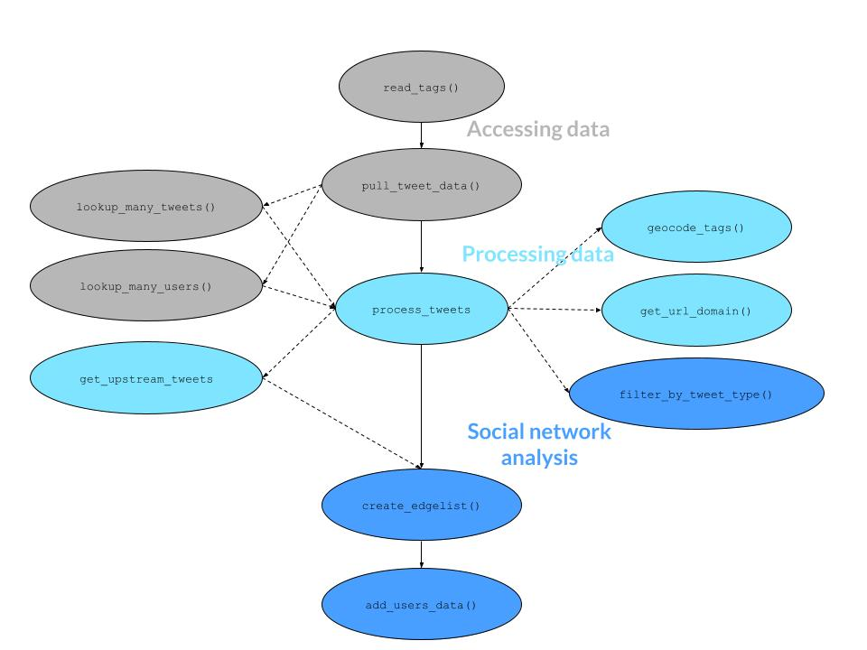

Importing and Analyzing Twitter Data Collected with Twitter Archiving Google Sheets
| Usage | Release | Development | Checks |
|---|---|---|---|
|
|

|

|
|
|
|
|

|

|

|
Overview
The purpose of tidytags is to make the collection of Twitter data more accessible and robust. tidytags retrieves tweet data collected by a Twitter Archiving Google Sheet (TAGS), gets additional metadata from Twitter via the rtweet R package, and provides additional functions to facilitate a systematic yet flexible analyses of data from Twitter. TAGS is based on Google spreadsheets. A TAGS tracker continuously collects tweets from Twitter, based on predefined search criteria and collection frequency.
In short, tidytags first uses TAGS to easily collect tweet ID numbers and then uses the R package rtweet to re-query the Twitter API to collect additional metadata. tidytags also introduces functions developed to facilitate systematic yet flexible analyses of data from Twitter.
Two vignettes illustrate the setup and use of the package:
-
Getting started with tidytags (
vignette("setup", package = "tidytags")) -
Using tidytags with a conference hashtag (
vignette("tidytags-with-conf-hashtags", package = "tidytags"))
Installation
You can install tidytags through R-universe:
install.packages("tidytags", repos = "https://ropensci.r-universe.dev")Once installed, use the library() function load tidytags:
Setup
For help with initial tidytags setup, see the Getting started with tidytags vignette (vignette("setup", package = "tidytags")). Specifically, this guide offers help for two key tasks:
- Making sure your TAGS tracker can be accessed
- Getting and storing Twitter API tokens
Usage
To test the tidytags package, you can use an openly shared TAGS tracker that has been collecting tweets associated with the AECT 2019 since September 30, 2019. This is the same TAGS tracker used in the Using tidytags with a conference hashtag vignette (vignette("tidytags-with-conf-hashtags", package = "tidytags")).
Core Functions
read_tags()
At its most basic level, tidytags allows you to import data from a Twitter Archiving Google Sheet (TAGS) into R. This is done with the googlesheets4 R package. One requirement for using the googlesheets4 package is that your TAGS tracker has been “published to the web.” See the Getting started with tidytags vignette (vignette("setup", package = "tidytags")), Key Task #1, if you need help with this.
Once a TAGS tracker has been published to the web, you can import the TAGS archive into R using read_tags().
example_tags <- "18clYlQeJOc6W5QRuSlJ6_v3snqKJImFhU42bRkM_OX8"
tags_data <- read_tags(example_tags)
head(tags_data)
#> # A tibble: 6 × 18
#> id_str from_user text created_at time geo_coordinates
#> <chr> <chr> <chr> <chr> <dttm> <chr>
#> 1 12519543127728… Harriet9… "RT … Sun Apr 1… 2020-04-19 20:22:23 <NA>
#> 2 12480641632110… Patrick8… "RT … Thu Apr 0… 2020-04-09 02:44:19 <NA>
#> 3 12342069467328… ELTAugus… "RT … Sun Mar 0… 2020-03-01 20:00:40 <NA>
#> 4 12294053501781… gsa_aect "RT … Mon Feb 1… 2020-02-17 14:00:50 <NA>
#> 5 12276522438700… fcis_iu "Giv… Wed Feb 1… 2020-02-12 17:54:38 <NA>
#> 6 12255051874539… Stauffer… "RT … Thu Feb 0… 2020-02-06 19:43:00 <NA>
#> # … with 12 more variables: user_lang <lgl>, in_reply_to_user_id_str <chr>,
#> # in_reply_to_screen_name <chr>, from_user_id_str <chr>,
#> # in_reply_to_status_id_str <chr>, source <chr>, profile_image_url <chr>,
#> # user_followers_count <dbl>, user_friends_count <dbl>, user_location <chr>,
#> # status_url <chr>, entities_str <chr>pull_tweet_data()
With a TAGS archive imported into R, tidytags allows you to gather quite a bit more information related to the collected tweets with the pull_tweet_data() function. This function uses the rtweet package (via rtweet::lookup_tweets()) to query the Twitter API.
This process requires Twitter API keys associated with an approved Twitter developer account. See the Getting started with tidytags vignette (vignette("setup", package = "tidytags")), Key Task #2, if you need help with this.
app <- rtweet::rtweet_app(bearer_token = Sys.getenv("TWITTER_BEARER_TOKEN"))
rtweet::auth_as(app)
expanded_metadata <- pull_tweet_data(tags_data, n = 10)
expanded_metadata
#> # A tibble: 7 × 43
#> created_at id id_str full_text truncated display_text_ra…
#> <dttm> <dbl> <chr> <chr> <lgl> <dbl>
#> 1 2020-04-19 15:22:23 1.25e18 125195431277… "RT @Rou… FALSE 140
#> 2 2020-03-01 15:00:41 1.23e18 123420694673… "RT @vel… FALSE 140
#> 3 2020-02-17 09:00:51 1.23e18 122940535017… "RT @tad… FALSE 140
#> 4 2020-02-05 14:23:27 1.23e18 122513787992… "RT @tad… FALSE 140
#> 5 2020-02-05 13:21:36 1.23e18 122512231784… "Many th… FALSE 268
#> 6 2020-01-21 18:07:15 1.22e18 121975838643… "RT @AEC… FALSE 140
#> 7 2020-01-19 18:46:51 1.22e18 121904357455… "RT @AEC… FALSE 140
#> # … with 37 more variables: entities <list>, source <chr>,
#> # in_reply_to_status_id <lgl>, in_reply_to_status_id_str <lgl>,
#> # in_reply_to_user_id <lgl>, in_reply_to_user_id_str <lgl>,
#> # in_reply_to_screen_name <lgl>, geo <list>, coordinates <list>,
#> # place <list>, contributors <lgl>, is_quote_status <lgl>,
#> # retweet_count <int>, favorite_count <int>, favorited <lgl>,
#> # retweeted <lgl>, possibly_sensitive <lgl>, lang <chr>, …Workflow
The following diagram represents how the functions included in the tidytags package may work together. These are presented in the figure below.

Learning More About tidytags
For a walkthrough of numerous additional tidytags functions, see the Using tidytags with a conference hashtag vignette (vignette("tidytags-with-conf-hashtags", package = "tidytags")).
Getting Help
{tidytags} is still a work in progress, so we fully expect that there are still some bugs to work out and functions to document better. If you find an issue, have a question, or think of something that you really wish {tidytags} would do for you, don’t hesitate to email Bret or reach out on Twitter: @bretsw and @jrosenberg6432.
You can also submit an issue on Github.
You may also wish to try some general troubleshooting strategies:
- Try to find out what the specific problem is
- Identify what is not causing the problem
- “Unplug and plug it back in” - restart R, close and reopen R
- Reach out to others! Sharing what is causing an issue can often help to clarify the problem.
- RStudio Community - https://community.rstudio.com/ (highly recommended!)
- Twitter hashtag: #rstats
- General strategies on learning more: https://datascienceineducation.com/c17.html
Considerations Related to Ethics, Data Privacy, and Human Subjects Research
{tidytags} should be used in strict accordance with Twitter’s developer terms.
Although most Institutional Review Boards (IRBs) consider the Twitter data that {tidytags} analyzes to not necessarily be human subjects research, there remain ethical considerations pertaining to the use of the {tidytags} package that should be discussed.
Even if {tidytags} use is not for research purposes (or if an IRB determines that a study is not human subjects research), “the release of personally identifiable or sensitive data is potentially harmful,” as noted in the rOpenSci Packages guide. Therefore, although you can collect Twitter data (and you can use {tidytags} to analyze it), we urge care and thoughtfulness regarding how you analyze the data and communicate the results. In short, please remember that most (if not all) of the data you collect may be about people—and those people may not like the idea of their data being analyzed or included in research.
We recommend the Association of Internet Researchers’ (AoIR) resources related to conducting analyses in ethical ways when working with data about people. AoIR’s ethical guidelines may be especially helpful for navigating tensions related to collecting, analyzing, and sharing social media data.
Contributing
If you encounter an obvious bug for which there is not already an active issue, please create a new issue with all code used (preferably a reproducible example) on GitHub.
If you would like to become a more involved contributor, please read the Contributing Guide.
Contributor Code of Conduct
Please note that this package is released with a Contributor Code of Conduct. By contributing to this project, you agree to abide by its terms.
How to Cite This Package in Publications
You can cite this package like this: “we collected, processed, and analyzed Twitter data using the tidytags R package (Staudt Willet & Rosenberg, 2022)”. Here is the full bibliographic reference to include in your reference list:
Staudt Willet, K. B., & Rosenberg, J. M. (2022). tidytags: Importing and analyzing Twitter data collected with Twitter Archiving Google Sheets. https://github.com/ropensci/tidytags
License 
The tidytags package is licensed under the MIT License. For background on why we chose this license, read this chapter on R package licensing.